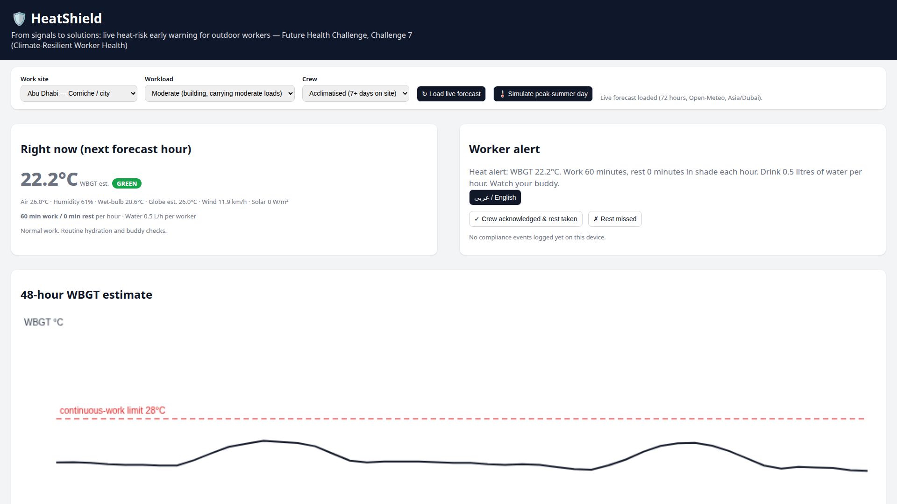

Future Health Digital Innovation Challenge · Challenge 7
🛡️ HeatShield
Climate-Resilient Worker Health — from signals to solutions
Team name: Kabut Asap · Team size: 1
Nur Arifin Akbar — PhD researcher, University of Palermo
Problem statement: Outdoor workers in the Gulf face extreme summer heat, but protection depends on supervisors manually translating a weather forecast into work, rest and hydration decisions — usually from air temperature alone, which understates the risk.
The problem
- Heat illness is preventable — yet it keeps injuring construction, delivery, agriculture and municipal workers across the Gulf every summer.
- Air temperature understates risk: it ignores humidity, solar radiation and wind. The occupational standard is WBGT.
- Today the translation forecast → work/rest/water is manual, inconsistent, and rarely per-crew.
- New and returning (unacclimatised) workers — often migrants — are at highest risk and get the least tailored protection.
The gap is not sensing. The gap is the decision — and proof the decision was followed.
The solution
HeatShield turns a live forecast into an auditable heat-risk decision, per site, per crew:
- Supervisor dashboard — current WBGT estimate + tier, 48-hour chart, tomorrow's full shift schedule.
- Worker alert — one plain sentence, English / Arabic: work minutes, rest minutes, water.
- Compliance adaptation — rests are logged; if a crew keeps missing them, its alerts fire one tier earlier. One transparent rule, no black box.
- No personal health data is collected, ever. Browser-only; no account, no install.
How it works — published science, not vibes
- Wet-bulb: Stull (2011) approximation, J. Applied Meteorology & Climatology — unit-tested against published worked examples.
- WBGT: ISO 7243 outdoor weighting (0.7 wet-bulb / 0.2 globe / 0.1 air); globe temperature estimated from solar radiation + wind, labelled an estimate.
- Work/rest: OSHA / ACGIH continuous-work WBGT limits by workload and acclimatisation → 45/15, 30/30, 15/45, or STOP.
- Data: Open-Meteo live forecast (free, no key) for five Gulf sites.
Risk tiers: GREEN AMBER RED BLACK = STOP WORK
Live product — real forecast, real decision

Live capture, 15 Nov 2026: Abu Dhabi, WBGT 22.2 °C, GREEN. In the peak-summer simulation the same dashboard escalates to BLACK / STOP at 39.4 °C.
Jury demo — simulated week (dummy data)

378
worker-days (simulated)
41.1 °C
peak WBGT (simulated)
247
crew-hours at RED / STOP
Synthetic July weather for 3 fictional crews, run through the same engine as live mode — permanently labelled SIMULATED DUMMY DATA in the product. Crew Charlie (new, unacclimatised) falls to 58% compliance and is flagged: early-alert adaptation ON.
Evidence — July 2026 backtest (real data)
0.45 °C
forecast WBGT error (MAE)
99.8%
forecast hours within one tier
465 / 465
midday hours at STOP*
- Method: ERA5 reanalysis vs archived ECMWF IFS forecasts for the same hours, both run through the product's own engine — all of July 2026, all five sites.
- Exposure: 45% of shift hours (06:00–18:00) were RED or STOP for a moderate acclimatised crew; 81% were STOP for heavy work by new, unacclimatised crews.
- Honest bias: forecasts under-predict WBGT slightly (−0.26 °C) — the unsafe direction; hence the conservative tier bands and the rule that an on-site instrument always overrides.
*Every 12:00–15:00 hour in July 2026 was STOP-tier for heavy unacclimatised work — the statutory midday break is necessary, not sufficient. Full method, per-site table and caveats: BACKTEST.md in the repository.
Impact and who it serves
- Workers: protection that arrives before the shift, in their language, matched to their acclimatisation.
- Supervisors: a defensible, standards-based schedule in seconds — and a compliance record.
- Employers / regulators: auditable decisions aligned with the UAE's statutory midday break, extendable hour-by-hour per crew.
- Equity: the least-protected group (new migrant workers) gets the strictest thresholds by design.
Assumptions, limitations, safety
- Planning tool, not a measurement device. An on-site WBGT instrument always overrides HeatShield. Estimated-WBGT uncertainty ≈ ±2 °C (globe-temperature estimate + forecast error).
- Forecast values are assumed to represent site conditions; rooftops and enclosed yards can be hotter.
- Workload and acclimatisation are supervisor-selected categories — no individual physiological assessment, no diagnosis, no medical advice.
- Human oversight: the supervisor may tighten the schedule, never loosen it. Emergency symptoms follow site emergency procedure.
Roadmap and ask
- Done since first submission: real-data backtest on July 2026 archive weather (slide 7). Next: Urdu / Hindi / Bengali alerts; WhatsApp delivery; on-site WBGT sensor ingestion for ground-truth validation.
- Pilot path: per-site SaaS for construction and facilities contractors in the Gulf — the auditable, dependency-free engine is the procurement-friendly core.
- Try it now: https://syaikhipin.github.io/heatshield/
- Video (1:56): embedded on the live page · Code: github.com/syaikhipin/heatshield
From signals to solutions — no crew should face a Gulf summer armed with nothing but a thermometer.